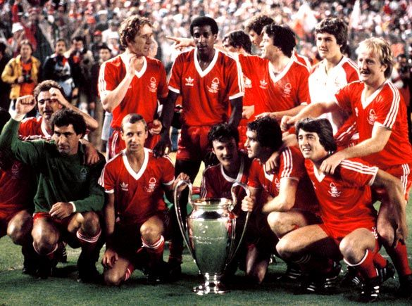
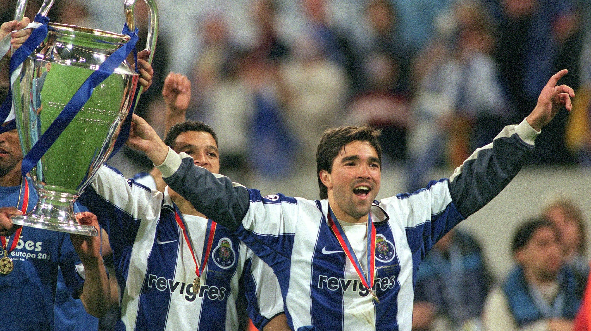

LEYENDAS
ESTOS SON CONCIDERADOS LAS LEYENDAS, PORQUE JUGANDO EN SGUNDA DIVICION, SIENDO EQUIPOS SUBESTIMADOS Y NO SIENDO LOS MEJORES EN SUS LIGAS LOGRARON SER BICAMPIONES, DERROTANDO A FUERTES RIVALES EN SUS TIEMPOS, POR ESO Y MAS SON LAS LEYENDAS DE ESTA COMPETENCIA.
1.- NOTTINGHAM FOREST

2.- Benfica

3.- Oporto
